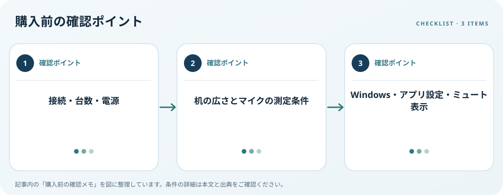

接続方式、マイク設置距離、会議アプリの入出力、ミュート操作を確認します。この記事では仕様の確認順を整理します。

接続方法と台数を確認
USB-A、USB-C、Bluetoothなど接続方法、付属ケーブル、外部電源の要否を確認します。複数PCやスマートフォンで使うなら、切替操作と同時接続の仕様をメーカー説明で照合します。USB-C端子があることだけでは音声や給電機能全てを判断できません。
マイク配置と会議設定
机の人数、距離、設置場所、ミュート操作の位置を想定します。集音範囲や指向性はメーカーが示す測定条件を読みます。Windowsでは入力デバイスを選びテストできますが、会議アプリ側の入力先やミュートも別に確認し、実際の部屋での性能を未確認のまま断定しません。
出力・操作・プライバシー
Windowsで出力先を選べるか、本体の音量・ミュートボタンや状態表示が使いやすいかを確認します。会議終了後にマイクが解放されるか、物理ミュートがあるかも仕様を見ます。複数の音声機器を使うなら、不要な機器を選んだままにしない運用も考えます。
購入前の確認メモ
- 接続・台数・電源
- 机の広さとマイクの測定条件
- Windows・アプリ設定・ミュート表示
この記事は出典の公開情報を購入前の確認項目に整理したもので、特定商品の使用・実測・レビュー・ランキング・価格・在庫の調査は行っていません。購入時には利用機器メーカーの最新仕様をご確認ください。
出典
- Set up and test microphones — Microsoft（確認日: 2026-10-10）
- Fix sound problems — Microsoft（確認日: 2026-10-10）
- Workstation Evaluation — OSHA（確認日: 2026-10-10）